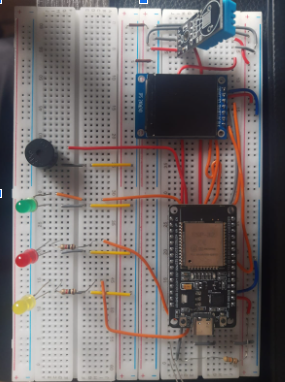
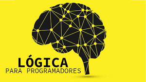
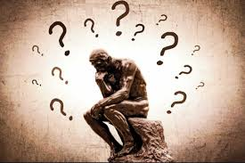
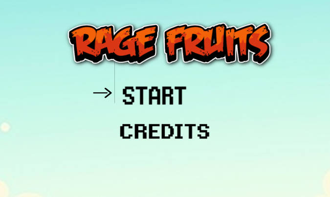
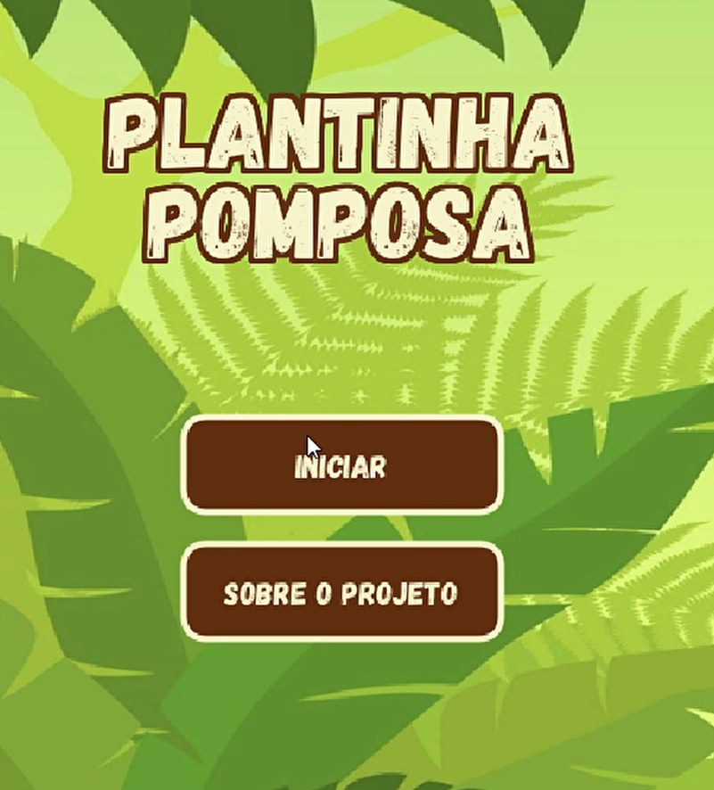
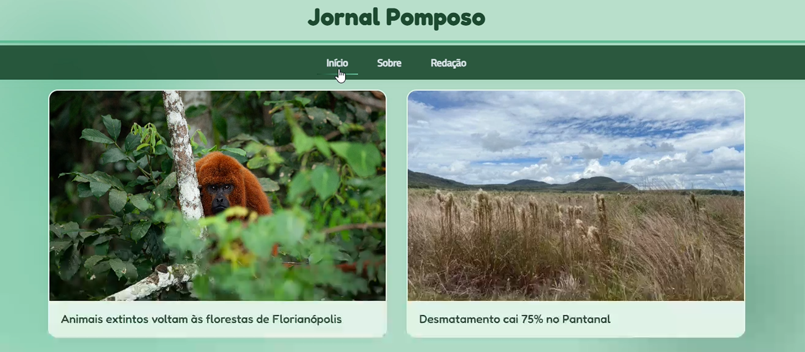

Olá! Olá! Sou um estudante de Ciências da Computação da Pontifícia Universidade Católica do Paraná (PUCPR). Antes de entrar para a universidade, tive 1 ano de experiência em programação C e banco de dados no SESI/SENAI internacional.
Em equipe, alinhado aos nossos conhecimentos e habilidades, desenvolvemos em equipe um projeto de estação meteorológica, com foco específico na monitorização da umidade relativa do ar em níveis reduzidos, um fenômeno bastante comum e relevante na cidade de Curitiba, especialmente em determinadas épocas do ano. O desenvolvimento deste projeto teve como premissa principal a busca por soluções acessíveis, eficientes e sustentáveis, que possam ser replicadas e escaladas com facilidade.
Para informações tecnicas sobre o codigo, acesse o Github

Mais uma vez, em um esforço conjunto e colaborativo, nossa equipe se reuniu para realizar a produção de um vídeo informativo e analítico, voltado para a exploração detalhada do sistema operacional Chrome OS. Ao longo do desenvolvimento deste material, buscamos apresentar de forma clara, didática e acessível as principais características dessa plataforma, abordando tanto seus aspectos positivos quanto negativos.

Em um trabalho realizado em equipe, desenvolvemos um jogo do Jokenpô (pedra, papel e tesoura) utilizando a linguagem Python. O projeto teve como principal objetivo aplicar na prática os conhecimentos adquiridos em lógica de programação, estruturas condicionais, funções e manipulação de entradas do usuário. A escolha do jogo Jokenpô se deu por ser um exemplo clássico e acessível, ideal para consolidar conceitos fundamentais de desenvolvimento e interação com o usuário por meio do terminal.
Para informações técnicas sobre o código, acesse o Github
EEm dupla, desenvolvemos uma máquina de vendas em Python, aplicando conceitos fundamentais da programação como funções e listas. O projeto teve como objetivo simular o funcionamento básico de uma máquina automática de vendas, permitindo ao usuário visualizar produtos disponíveis, selecionar itens, inserir valores e receber o troco, quando necessário.
Para informações técnicas sobre o código, acesse o Github
Um trabalho realizado em equipe, desenvolvemos um projeto em Python com o objetivo de implementar uma tabela-verdade, ferramenta fundamental no estudo da lógica booleana e do raciocínio computacional.
Para acessar o jogo clique nesse link.

Em um trabalho realizado de forma colaborativa, nossa equipe desenvolveu uma entrevista com um profissional atuante na área de tecnologia, com o objetivo de investigar e compreender os impactos da inteligência artificial (IA) em sua rotina de trabalho e no setor como um todo.
Em um trabalho realizado de forma colaborativa, nossa equipe desenvolveu um projeto utilizando o software Construct 3, uma plataforma voltada para o desenvolvimento de jogos e aplicações interativas por meio da programação em blocos. Essa abordagem visual e intuitiva permitiu que colocássemos em prática os fundamentos da lógica de programação, mesmo sem a necessidade de escrever códigos de forma tradicional.
Para acessar o jogo clique nesse link ou na imagem.

Mais uma vez, por meio do trabalho em equipe, desenvolvemos um aplicativo multimídia educacional, com o propósito central de conscientizar o público jovem sobre a importância da preservação do meio ambiente. A proposta surgiu da necessidade de abordar questões ambientais de forma acessível, interativa e engajadora, utilizando recursos visuais, sonoros e informativos que dialogassem diretamente com as novas gerações.
Para acessar o GitHub do aplicativo, clique nesse link ou na imagem.

Com o tema semelhante ao trabalho anterior,realizamos, em equipe, um painel de notícias positivas sobre o meio ambiente. O principal objetivo desta atividade foi despertar a atenção para as boas práticas ambientais, demonstrando que, apesar dos inúmeros desafios ecológicos enfrentados globalmente, há iniciativas, projetos e atitudes que vêm contribuindo de forma significativa para a preservação e recuperação do nosso planeta.
Para acessar o aplicativo clique nesse link ou na imagem.
